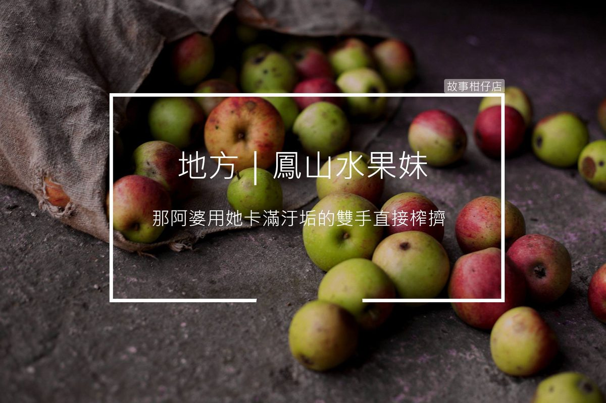

鳳山水果妹

高雄鳳山有位阿婆總在路口穿梭車陣中推銷果汁，這些果汁是用一堆腐爛水果由她「親手」擠壓製成，而且時常直接將兩瓶不相干的果汁混在一起，強迫推銷，甚至強迫「以物易物」，將果汁丟給騎士後，直接動手搶走騎士的便當或飲料。
為了閃避阿婆攻擊，總讓騎士不惜紅燈越線，連飆車族都聞風喪膽，人稱「水果妹」，是鳳山地區的都市傳說。據傳她存款驚人，且有數棟透天厝。
〈鳳山水果妹〉
快！快！過得去、可以、可以…….噢不！黃燈了！
明鳳懊惱地放慢速度，與整排機車交錯停在紅燈線前。
她繃緊神經從後照鏡觀察動靜，那個全身披掛暗紅罩衫的怪婆婆駝著背，穿梭在車陣中向騎士兜售手中的罐裝果汁。所有機車分頭逃竄，一輛黑色勁戰甚至越過了線，差點被疾駛而過的汽車撞上。
眼見阿婆從背後逐漸逼近，明鳳趕緊往右邊靠去，停在後頭的短髮少女成了替死鬼，阿婆不由分說，便將一整袋果汁放在cuxi腳踏板上。
明鳳一邊同情，一邊慶幸躲過一劫，蓬頭垢面的阿婆卻不知何時將臉貼在她耳邊，伸出髒污右手拿走明鳳掛在龍頭下的珍珠奶茶，咧開一張沒牙的嘴，嘿嘿笑著硬塞來一罐果汁，隨即又大包小包步步逼近其他機車。
氣呼呼到家後，明鳳隔著衛生紙才敢拿起瓶身黏糊糊的罐子，毫不留戀全數倒掉，果汁發出噁心臭味，叫人想吐。
當晚明鳳甚至夢見那阿婆用她卡滿汙垢的雙手直接榨擠剖半柳丁，然後一匙一匙將發臭黃色液體餵進明鳳嘴裡。
幸好沒為了這惡夢遲到，明鳳掛著黑眼圈坐在櫃檯後，調來這分行不到一周，皮得繃緊一點。
「砰！」一大袋果汁從天而降，明鳳驚恐抬起眼，眼前正是那個阿婆。
阿婆咂著乾癟的嘴，眼角皺紋爬到顴骨，她從灰撲撲布包內掏出厚厚一疊鈔票及皺巴巴帳簿，「我欲寄錢。」
點鈔機飛快數完鈔票，明鳳對著帳簿瞪大了眼，飛快地在心中確認存款數字長度。阿婆氣定神閒，拿起一罐瓶身沾上污泥的果汁，瓶口塞進嘴裡，咕嚕咕嚕喝下半罐。
每個黃昏時刻，
讓故事柑仔店
為您說說地方的故事。